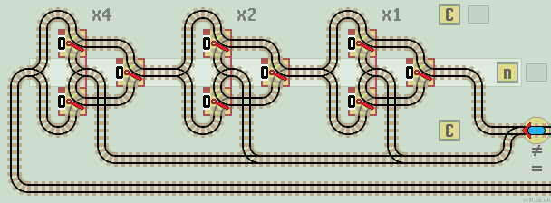
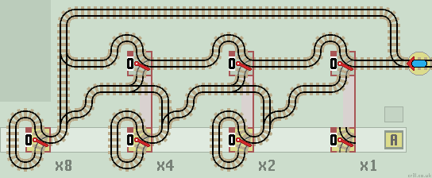
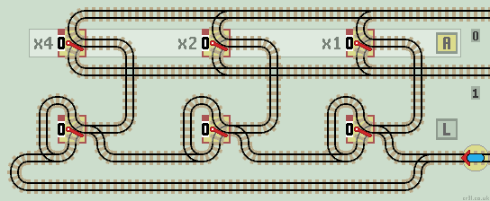
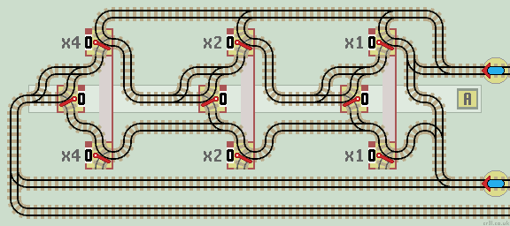

Functions using Linked Points
Linked (or cooperative) points, are connected by a mechanical link so that they operate together. If one point is switched by an operator or train, then both points are switched.
The train enters each function from the right. This allows registers to be extended to the left to accommodate larger numbers.
Comparator (= < >)
This comparator circuit detects if n>C or C>n as well as n=C. To do so it must start the comparison process at the left 'most significant bit'. If they are the same the train passes on to test the next stage. If they are different the train returns along the corresponding upper or lower track.
The upper track returns the train if the value of C is less than n.
The lower track returns the train if the value of C is greater than n.
The central track returns the train if the value of C equals n.
In this circuit, the cental track is connected to the upper track so the two inequalities are combined. Usually the computation is halted if the Count C is equal to or greater than the requested nth term. Also note that the upper lazy 'x1' point is redundent and can be removed.

|
| Click layout to pause/run train | Click points to switch 0/1 | Click start circle to reset train/points |
Not Equal
This circuit detects if n is not equal to C and if so, returns the train back along the same track. If n is equal to C then the train returns via the lower track, usually to halt the computation.
| 
|
| Click layout to pause/run train | Click points to switch 0/1 | Click start circle to reset train/points |
The train checks each stage in turn. If C is not equal to n the train passes onto the next stage. Otherwise, the train exits back along the input track.
Exchange (Swop)
This circuit exchanges (swops) the values held in registers A and B.

|
| Click layout to pause/run train | Click points to switch 0/1 | Click start circle to reset train/points |
The train checks each stage in turn. If A and B are equal, the train passes onto the next stage. Otherwise, the bit values of B then A are inverted. To test the circuit, enter values into both registers. The train will swop the two values.
Negate (2's complement)
Two's complement is a method of representing negative binary numbers. See 2'c Comp for subtraction methods using an Inverter and an Incrementor. This circuit generates the 2's complement directly, by inverting all bits 'after' the first 1.
| 
|
| Click layout to pause/run train | Click points to switch 0/1 | Click start circle to reset train/points |
Starting from the least significant bit (LSB), if it is a 0, the train passes onto the next stage. If it is a 1, then all subsequent bits are inverted. There are no overflow errors.
Normally, a 3 bit binary number ranges from 0 (000) to 7 (111). With 2's complement the range is from plus 3 (011) to minus 3 (101). Note that binary zero (all 0's) has a single representation. Applying the 2's complement function a second time reverts back to the original number. |
|
Gray Code Counter
This counter circuit exhibits Gray Code (non reflective). The header circuit on the right creates an inverted lazy point (see layouts). It is an example of a maximum run (28 step) Auto Switching Layout.

|
| Click layout to pause/run train | Click points to switch 0/1 | Click start circle to reset train/points |
The circuit produces an 8 step sequence as shown in the table. Gray Code Counters ensure only one pair of linked points is switched at each step.
|
|
Sequential Read
Trains arriving on the lower line read out each data bit in turn from register A. The lower lazy points act as an incremental latch, sending the train one stage further on each visit.
| 
|
| Click layout to pause/run train | Click points to switch 0/1 | Click start circle to reset train/points |
The train passes through each stage until it reaches the first lazy point set to 0. This is inverted. The train passes up and reads out the data bit held in register A, by leaving along the appropriate 0 or 1 exit line.
When all latches are set to 1, the train returns back along the input line.
Sequential Write
All lazy points need to be reset to 0. Trains arriving on the 0 or 1 line write each data bit in turn into Register A. Trains exit on the lower 1 line.

|
| Click layout to pause/run train | Click points to switch 0/1 | Click start circle to reset train/points |
How it works
Each linked lazy point acts as a latch. The train passes through each stage until it reaches the first latch set to 0. The train is diverted to the centre where it writes a 0 or 1 into register A (note that register A lazy points are drawn reflected). The train leaves and exits along the lower 1 line. No points will be switched, as all are already set to 1.
Any overflow errors from either a 0 or a 1 input, are sent back via the upper 0 line, which resets all latches to 0.
Leading Zero Latch
A combined specialised function used in multiplier circuits. This function identifies leading zeros in the number held in register A, and also checks if all latches are set to 1.
| 
|
| Click layout to pause/run train | Click points to switch 0/1 | Click start circle to reset train/points |
How it works
This circuit checks each digit of register A in turn. Starting at the left (most significant bit), each latch is set to a 1 for a leading 0 and zeros thereafter. So for instance if register A = 00101 then the look ahead function will set the latches to 11000.
The second upper input line checks if all latches are set to 1. If they are, there is no need for any further calculations and the train is returned by the lower line, usually to halt the computation. If any latch is set to 0, the train is returned back along the same line to continue with the calculation.